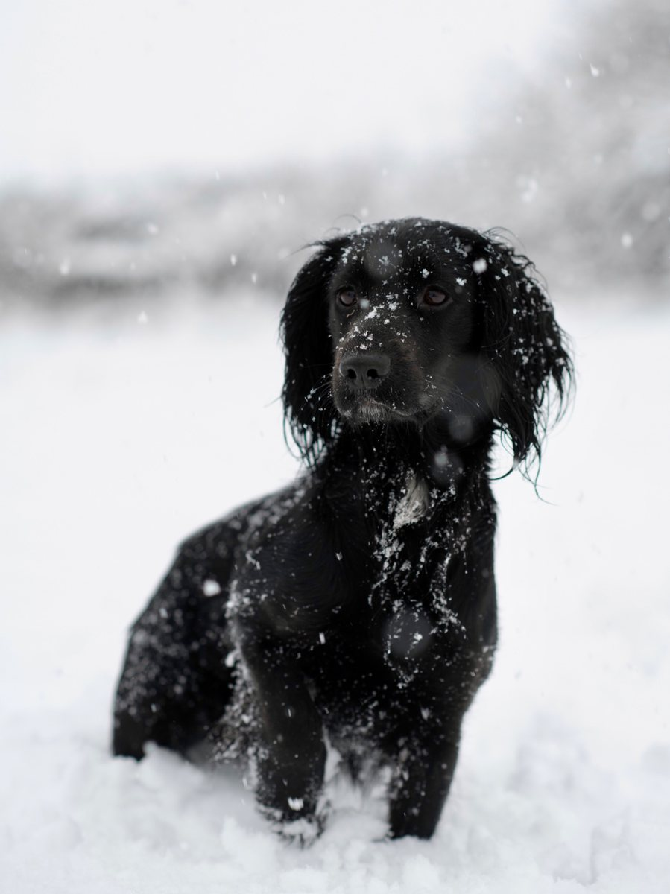

Stud dog
Merlin
Out of Dance River Penny and Tarncrag Razzmataz. Merlin is the current dog at Arctaurid Gundogs and will be one to watch as he matures.
This section is ready for a fuller profile later, including pedigree, health information, working notes and future stud details if you decide to offer them.